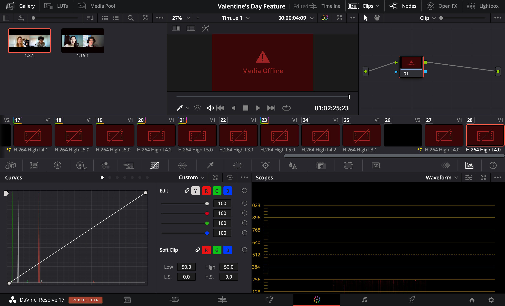
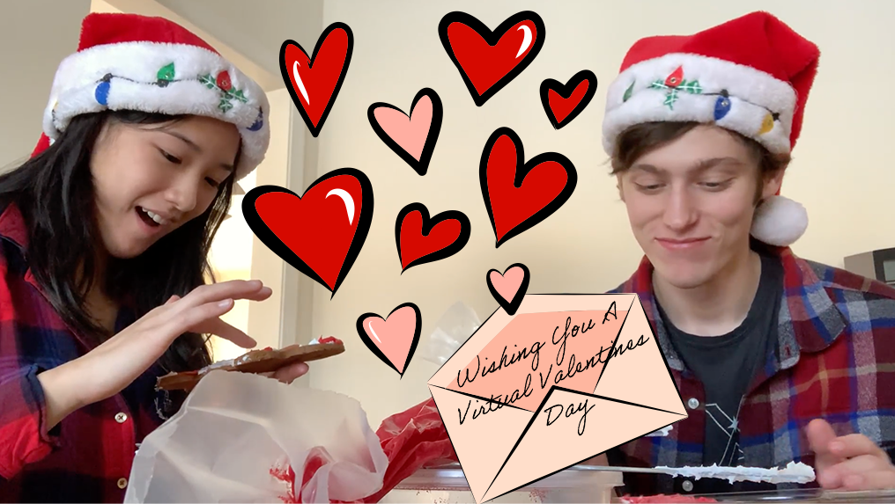

Virtual Valentine's Day
Fragmented by the virtual atmosphere during the COVID-19 pandemic, Valentine’s Day presented a new challenge to couples striving to remain connected. To stay in touch on a day-to-day basis, couples typically video call, watch movies, or play video games. Though many miss the face-to-face interaction, they also find that they may have grown closer as a result of being able to call so frequently during the pandemic. Barring the personal interactions, most couples’ Valentine’s Day celebrations were similar to previous years, often involving food or gifts.
I created this feature covering how couples are celebrating Valentine's Day during the pandemic. I conducted one of the two interviews, as well as strung together the videos, wrote and edited the script, stabalized the shots, and edited sound and color. This feature was published on tjTODAY.
Process
- Determine the driving question
- Create outline listing the video and audio clip for the particular time
- Create questions for interviewees
- How did you and your significant other meet?
- When did you start dating?
- What is a significant moment/memory from your relationship?
- Do you feel like the separation from COVID-19 has strengthened your bond? How or how not?
- How often do you stay in touch and through what?
- How are you celebrating or planning to celebrate Valentine’s Day?
- What do you miss most about being able to meet in-person?
- Conduct interviews
- Acquire b-roll
- Refine script based on interviews and b-roll
- Put together the video, editing color, video stabilization, and sound 
- Create thumbnail 
How are students celebrating their Valentine’s Day with their significant other despite COVID-19 hindering in-person connections?
Although we later opted for a simpler thumbnail, this is a thumbnail that I drew for this feature.
Click here to view the document planning sheet I created for this video.